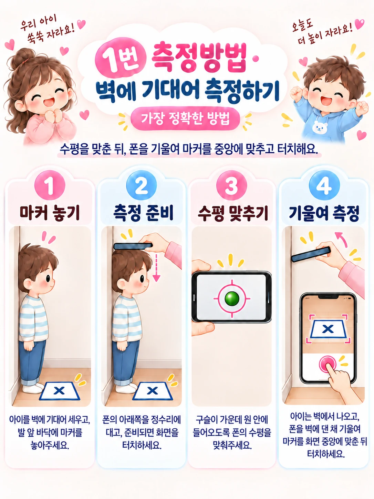
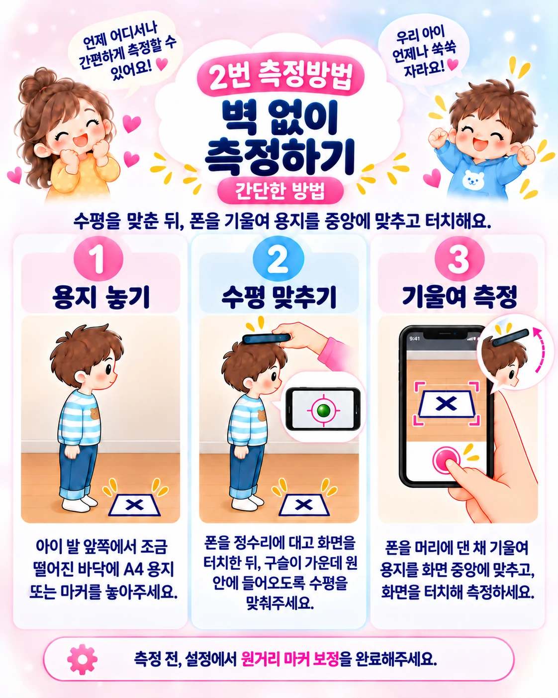

tallCheck / 사용 안내도움말 홈 ↗
02 / MEASURE
수평을 맞추고,
마커를 향해 기울이세요
두 번의 터치 사이에서 휴대폰의 머리 접촉 지점을 유지하는 것이 핵심입니다. 먼저 준비와 기준측정을 완료하세요.
측정 전 확인
수평 원점·기준측정을 먼저 완료하세요. 실제 측정에서도 기준측정 때 사용한 용지·마커의 크기와 위치를 유지합니다.
방법 1. 보호자와 함께, 벽에 기대어 측정
아이와 마커의 위치를 맞춥니다
아이를 벽에 기대어 세우고 용지 또는 마커를 기준측정 때의 위치에 놓습니다. 아이는 자연스럽게 똑바로 서고, 보호자가 휴대폰으로 측정합니다.
휴대폰을 정수리에 댑니다
휴대폰 아랫면의 머리 접촉 지점을 정수리에 맞춥니다. 머리카락 때문에 휴대폰이 뜨거나 기울지 않게 합니다.
구슬을 가운데 원 안에 넣고 터치합니다
휴대폰을 수평으로 맞추고 흔들림이 잦아들면 화면을 터치합니다.
머리 접촉 지점을 유지하며 기울이고 다시 터치합니다
아이의 자세와 휴대폰 접촉 지점이 움직이지 않게 유지합니다. 바닥의 용지·마커를 십자가 가운데 원에 맞추고 다시 터치합니다.

방법 2. 발 앞의 마커를 비추며 측정
혼자 측정하는 자세에서는 화면 터치가 어려울 수 있으므로 리모컨 등 앱 안내에 맞는 조작 수단을 준비하세요. 이 방법은 원거리 마커 보정을 먼저 완료해야 합니다.
마커를 보정할 때와 같은 위치에 놓습니다
발과 마커 사이의 거리와 방향을 맞춥니다. 바닥 전체와 마커가 가려지지 않게 합니다.
정수리에서 수평을 맞추고 첫 번째 입력을 합니다
휴대폰을 머리에 대고 구슬을 가운데 원 안에 맞춥니다. 자세를 유지한 상태에서 측정을 시작합니다.
휴대폰을 기울여 마커를 맞추고 두 번째 입력을 합니다
머리 접촉 지점이 움직이지 않게 유지하면서 마커를 십자가 가운데 원에 맞춥니다.

측정한 값은 확인한 뒤 저장하세요
결과를 등록 화면으로 가져온 뒤 아이, 날짜, 키와 단위를 확인하고 저장합니다. 값이 평소와 크게 다르면 무조건 저장하기보다 같은 조건에서 다시 측정해 보세요.
- 마커 전체가 보이도록 하고 강한 반사광과 그림자를 피합니다.
- 수평 터치 후 휴대폰을 위아래로 들어 올리거나 머리에서 떼지 않습니다.
- 같은 시간대와 비슷한 자세에서 측정하면 기록을 비교하기 편합니다.
- 수치가 계속 다르면 마커 실제 크기, 기준측정 범위, 원거리 보정부터 확인하세요.